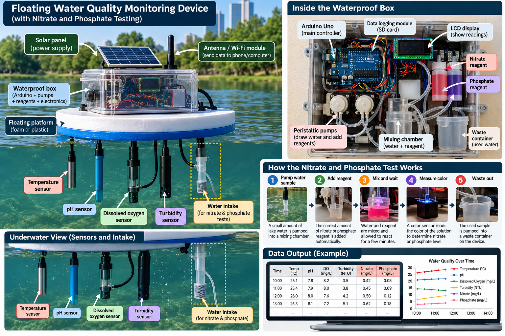

Observe
Measure water conditions with affordable sensors instead of relying on a single visual clue.
LADY BIRD LAKE · AUSTIN, TEXAS
Nature Nexus is exploring how water temperature, pH, dissolved oxygen, turbidity, nutrients and water movement change together — and how an affordable sensor robot could make those changes easier to see.
Student research prototype. It does not determine whether water is safe or whether cyanobacteria are toxic.
THE QUESTION
Austin reports that conditions favorable to harmful blue-green algae include warm water, low flow and high nutrient levels. The city also notes that field samples are snapshots: conditions can change quickly and vary around the lake.
That gap inspired our challenge: build a system that measures several environmental clues repeatedly and puts them together in one simple dashboard.
Measure water conditions with affordable sensors instead of relying on a single visual clue.
Compare temperature, pH, oxygen, turbidity, nutrients and movement to look for patterns.
Turn readings into a clear traffic-light style signal for research — not a public safety warning.
ROBOT LAB
PROPOSED ENGINEERING DESIGN
This concept brings the team’s sensor ideas into one floating platform. The device is designed to collect water-quality readings, take small water samples for nitrate and phosphate testing, log results, and send measurements to a phone or computer for later comparison.

Temperature, pH, dissolved oxygen and turbidity can be measured repeatedly so the team can study how conditions change over time.
A small water sample can be pumped into a mixing chamber, combined with a reagent and measured with a color sensor. This is a proposed prototype workflow that the team can simplify and validate in controlled tub testing.
An SD-card module can save readings while Wi-Fi or another wireless module can send results to a laptop or dashboard for graphing and comparison.
The team can begin with a stationary floating prototype in a tub, prove each sensor and sampling step, then add mobility, mapping, phycocyanin sensing and AI only after the basic measurements are reliable.
This device is intended to monitor environmental conditions and collect screening measurements. It does not by itself prove that cyanobacteria or toxins are present, and it should not be used to declare water safe or unsafe.
INTERACTIVE MODEL
Move the sliders and see how multiple conditions can combine. This score is a classroom visualization, not a toxin prediction.
Several conditions may support growth. Keep measuring and compare the trend over time.
RESEARCH NOTEBOOK
Study Lady Bird Lake, cyanobacteria, toxins, nutrients, flow and existing monitoring limitations.
Use scientist and watershed conversations to discover what data matter, what is difficult to measure and where a student prototype could help.
Verify each connection and reading before adding another sensor. Current progress: water temperature verified; turbidity added to the build.
Change one condition at a time, record data and compare repeat trials. Avoid culturing or handling potentially toxic cyanobacteria.
Add mobility or a sampling mechanism so the system can gather readings from different locations in a test tub.
Show what the sensors can tell us — and what they cannot. Confirming cyanobacteria or toxins requires appropriate biological or laboratory testing.
OUR EXPERT JOURNEY
Nature Nexus did more than search online. The team presented its research, asked questions, listened to expert feedback and used those conversations to improve the project.
PhD candidate, University of Georgia · cyanobacterial bloom research
The team moved toward a multi-sensor Water Scout: temperature, pH, turbidity, dissolved oxygen, nutrients and water movement now form the core environmental measurements, with phycocyanin and AI as future upgrades.
Austin Watershed Protection · blue-green algae and reservoir research
The discussion pushed Nature Nexus to treat the robot as a research and monitoring tool rather than simply an algae-removal machine, and to think about sampling different locations and conditions instead of relying on one surface reading.
Expert discussion with Nature Nexus · October 14, 2026
The discussion reinforced Nature Nexus's decision to build a modular Water Scout. Instead of trying to solve every part of the algae problem at once, the kids are validating temperature and turbidity first, then adding pH, dissolved oxygen, nutrients and water movement. Their next goal is to run controlled tub experiments, compare repeat readings, and only then add mobility, mapping and AI pattern recognition.
FUTURE DASHBOARD
DATA & SOURCES
Nature Nexus Lab is an independent student project concept inspired by the learning approach of Lake Lab. It is not affiliated with the City of Austin and should not be used for recreation or health decisions.